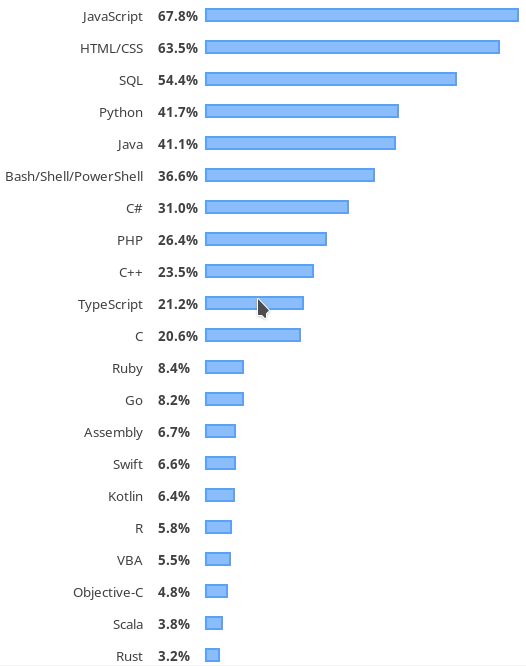

Desarrollo Back-End
El desarrollador back-end trabaja del lado Servidor, detrás del escenario, permitiendo con su trabajo
que el usuario disfrute de su experiencia. Sin él, el desarrollo llevado a cabo por el frontend
no se sostendría.
Los desarrolladores web son como duendes con poderes: nunca los ves, pero son los que hacen que todo
esté bien y funcione de manera rápida y eficiente.
Los conocimientos y habilidades vinculados al desarrollo web son los más demandados y también los
mejor pagados. Se trata de una carrera con muchas posibilidades y salidas.
Encuesta de StackOverFlow 2019
Toca turno de ver las tendencias del desarrollo back-end, obviamente también obtenido de Stack Overflow
A continuación veremos los resultados de la encuesta orientado al desarrollo backend.
Si deseas ver los resultados de la encuesta completa, puedes verlos en Developer Survey Results 2019.

Podemos observar en la imagen que Javascript (tambien funcional del lado del back-end) es el mas
usado y obvio porque es lo de ahora.
Existen muchos lenguajes para el desarrollo del backend, pero personalmente yo prefiero el uso de los
lenguajes Python
y Ruby. Estos lenguajes son muy parecidos en cuanto la
sintaxis y ademas son muy faciles de usar, aunque Ruby se encuentre en una posicion muy por debajo
de los primeros lugares de la encuesta de StackOverFlow, no deja de ser un lenguajes muy amago por
la comunidad y recordar que grandes paginas web estan escritas en Ruby on Rails.
| Python |
Ruby |

|

|
| Django |
Rails |
| Django es un framework de desarrollo web de código abierto, escrito en Python, que
respeta el patrón de diseño conocido como Modelo–vista–template. Fue desarrollado en
origen para gestionar varias páginas orientadas a noticias de la World Company de
Lawrence, Kansas, y fue liberada al público bajo una licencia BSD en julio de 2005.
|
Ruby on Rails, también conocido como RoR o Rails, es un framework de aplicaciones web de
código abierto escrito en el lenguaje de programación Ruby, siguiendo el paradigma del
patrón Modelo Vista Controlador (MVC). El lenguaje de programación Ruby permite la
metaprogramación, de la cual Rails hace uso.
|
| Paginas escritas en Python |
Paginas escritas en Ruby |
| Instagram, Pinterest, Dropbox |
GitHub, Twitter, Airbnb |
| Comunidad |
Comunidad |
| Algo muy importante para el desarrollo de un lenguaje es la comunidad, la misma
comunidad de Python cuida el lenguaje y casi todas las actualizaciones se hacen de
manera democrática. |
Hay un montón de desarrolladores que trabajan activamente con Ruby. Una comunidad
activa es otra fuente abundante de ayuda cuando nos encontramos ante un problema. |
Qué hay de nuevo en Ruby on Rails 6 Beta
Video sacado del canal de youtube codigofacilito
Visita el sitio web de CódigoFacilito